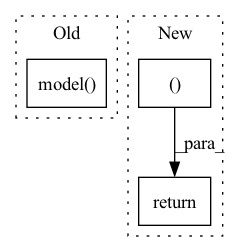

Pattern ID :1686

Before Change
@override(ModelV2)
def forward(self, input_dict, state, seq_lens):
model_out, _ = self.model(input_dict, state, seq_lens)
return model_out, []
After Change
@override(ModelV2)
def forward(self, input_dict, state, seq_lens):
return input_dict["obs_flat"].float(), state
In pattern: SUPERPATTERN
Frequency: 3
Non-data size: 3
Instances
Fragment ID: 5778050
Project Name: replicable-marl/marllib
Commit Name: d339c3de863e3cae6fbfe67e503ff0953e2cd868
Time: 2022-03-03
Author: hhhusiyi@163.com
File Name: MetaDrive/model/torch_maddpg.py
M Class Name: MADDPGTorchModel
N Class Name: MADDPGTorchModel
M Method Name: forward(4)
N Method Name: forward(4)
M Parent Class: nn.Module,TorchModelV2
N Parent Class: nn.Module,TorchModelV2
M File Name: MetaDrive/model/torch_maddpg.py
N File Name: MetaDrive/model/torch_maddpg.py
M Start Line: 241
M End Line: 242
N Start Line: 238
N End Line: 238
'>
Before Change
@override(ModelV2)
def forward(self, input_dict, state, seq_lens):
model_out, _ = self.model(input_dict, state, seq_lens)
return model_out, []
After Change
@override(ModelV2)
def forward(self, input_dict, state, seq_lens):
return input_dict["obs_flat"].float(), state
'>
Fragment ID: 5778051
Project Name: replicable-marl/marllib
Commit Name: d339c3de863e3cae6fbfe67e503ff0953e2cd868
Time: 2022-03-03
Author: hhhusiyi@163.com
File Name: MPE/model/torch_maddpg.py
M Class Name: MADDPGTorchModel
N Class Name: MADDPGTorchModel
M Method Name: forward(4)
N Method Name: forward(4)
M Parent Class: nn.Module,TorchModelV2
N Parent Class: nn.Module,TorchModelV2
M File Name: MPE/model/torch_maddpg.py
N File Name: MPE/model/torch_maddpg.py
M Start Line: 237
M End Line: 238
N Start Line: 234
N End Line: 234
'>
Before Change
if self.outermost:
return self.model(x)
else: // add skip connections
return torch.cat([x, self.model(x)], 1)
After Change
if not self.outermost: // add skip connections
output = torch.cat([x, output], 1)
return output, return_feats
'>
Fragment ID: 5778052
Project Name: jolibrain/joligan
Commit Name: 9f1109e5b2dc49370abca391e67ab0a1de845b6e
Time: 2022-06-16
Author: pierre-nicolas.suau@jolibrain.com
File Name: models/modules/unet_architecture/unet_generator.py
M Class Name: UnetSkipConnectionBlock
N Class Name: UnetSkipConnectionBlock
M Method Name: forward(3)
N Method Name: forward(2)
M Parent Class: nn.Module
N Parent Class: nn.Module
M File Name: models/modules/unet_architecture/unet_generator.py
N File Name: models/modules/unet_architecture/unet_generator.py
M Start Line: 152
M End Line: 155
N Start Line: 171
N End Line: 184